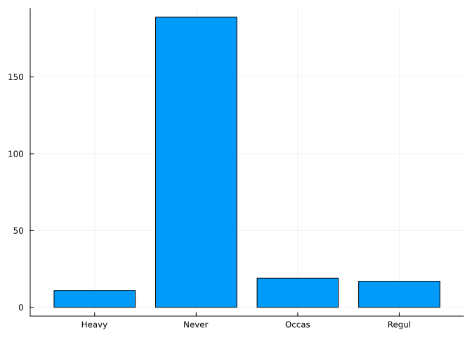
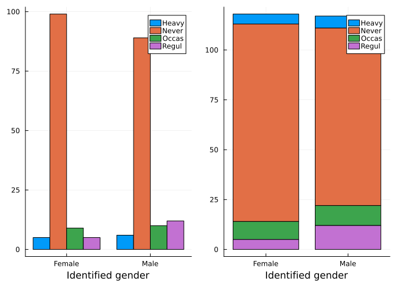
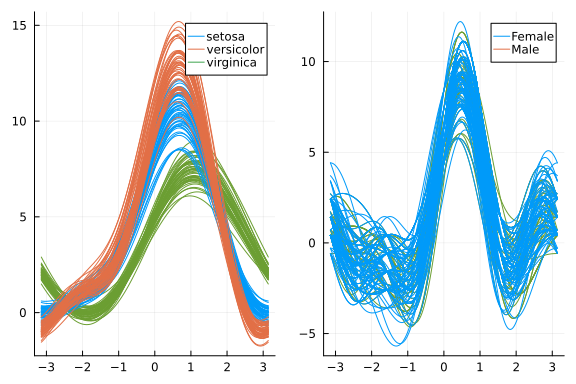
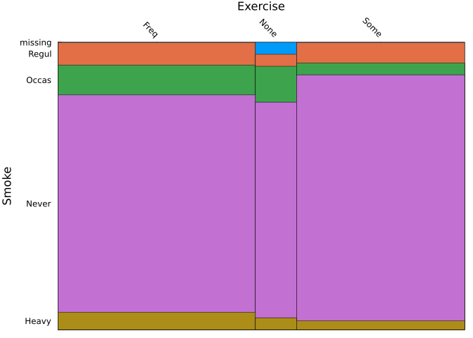

using StatsBase, StatsPlots
using DataFrames, Chain, CategoricalArrays
using RDatasets5 Categorical data
In the last chapter, the main variable was numeric either a measurement taken over the levels of a factor or as a pair of numeric variables. In this chapter we consider univariate and bivariate categorical data.
We will use the following, by now standard, packages in this chapter:
5.1 Univariate categorical data
We first start with a single categorical variable before turning our attention to the case of one or more such variables.
5.1.1 Tabulations
Let’s consider a data set from R’s MASS package on a student survey; in particular the Smoke variable, which is stored as a categorical variable. The levels method reports 4 levels for this variable:
using RDatasets
survey = dataset("MASS", "survey")
smokes = survey.Smoke
levels(smokes)4-element Vector{String}:
"Heavy"
"Never"
"Occas"
"Regul"How frequent is each? We would need to tabulate to answer that question.
The countmap function from the StatsBase package counts occurrences in each level, returning a dictionary:
countmap(smokes)Dict{Union{Missing, CategoricalValue{String, UInt8}}, Int64} with 5 entries:
"Occas" => 19
"Heavy" => 11
missing => 1
"Never" => 189
"Regul" => 17There are numerous alternatives.
Using a data frames approach, this tabulation can be done by grouping and applying the nrow function:
combine(groupby(survey, :Smoke), nrow)5×2 DataFrame
| Row | Smoke | nrow |
|---|---|---|
| Cat…? | Int64 | |
| 1 | missing | 1 |
| 2 | Heavy | 11 |
| 3 | Never | 189 |
| 4 | Occas | 19 |
| 5 | Regul | 17 |
Similarly, we can split (with group from SplitApplyCombine) and apply length:
import SplitApplyCombine: group
@chain survey begin
eachrow
copy
group(r -> r.Smoke, _)
map(length, _)
end5-element Dictionaries.Dictionary{Any, Int64}
CategoricalValue{String, UInt8} "Never" │ 189
CategoricalValue{String, UInt8} "Regul" │ 17
CategoricalValue{String, UInt8} "Occas" │ 19
CategoricalValue{String, UInt8} "Heavy" │ 11
missing │ 1The above easily tabulates the same, and would be useful if the data were not in a data frame.
For tabulation, a separate package has benefits. We use the FreqTables package and its freqtables function. This returns a named vector:
using FreqTables
tbl = freqtable(smokes)5-element Named Vector{Int64}
Dim1 │
────────┼────
"Heavy" │ 11
"Never" │ 189
"Occas" │ 19
"Regul" │ 17
missing │ 1Named vectors are from the NamedArrays package and offer indexing by name, similar to a data frame.
Any of these approaches show for this data set that even in the \(90\)s “Never” is by far the most common response for past smoking habits, and that there is one missing response.
5.1.2 Visualizations
Tabulations can be visualized beyond using a table.
A bar chart represents the above tablulations using bars proportional to the counts. The bar function makes a bar chart for the labels in x and the given data. For this example, we have either have to add “missing” to the levels, or, as is done here, excise it from the data set.
bar(levels(smokes), tbl[1:end-1]; legend=false)
Another common graphic is to use a dot, not a bar, to represent the value. Still another graphic is the pie chart; common in the business world, but not a favorite within introductory statistics.
5.2 Paired categorical data
In the survey data set we could look at pairs of data where both are categorical and ask questions about the pair. For example, the data contains information on smoking and identified gender (Sex). Is one gender more likely to smoke?
Again, we can use grouping and apply to see the counts:
tbl = combine(groupby(survey, [:Sex, :Smoke]), nrow)
first(tbl, 3) # 3 of 10 rows displayed3×3 DataFrame
| Row | Sex | Smoke | nrow |
|---|---|---|---|
| Cat…? | Cat…? | Int64 | |
| 1 | missing | Never | 1 |
| 2 | Female | Heavy | 5 |
| 3 | Female | Never | 99 |
A contingency table is the more familiar means to view two-way categorical count data. A count of all combinations of the levels of one and the levels of the other is presented in a grid.
With unstack we can do this within DataFrames:
@chain survey begin
select([:Sex, :Smoke])
dropmissing
groupby([:Sex, :Smoke])
combine(nrow => :value)
unstack(:Smoke, :value)
end2×5 DataFrame
| Row | Sex | Heavy | Never | Occas | Regul |
|---|---|---|---|---|---|
| Cat… | Int64? | Int64? | Int64? | Int64? | |
| 1 | Female | 5 | 99 | 9 | 5 |
| 2 | Male | 6 | 89 | 10 | 12 |
The above dropped missing values; to keep them in, the allowmissing argument may be specified to unstack:
@chain survey begin
groupby([:Sex, :Smoke])
combine(nrow => :value)
unstack(:Smoke, :value; allowmissing=true)
end3×6 DataFrame
| Row | Sex | Never | Heavy | Occas | Regul | missing |
|---|---|---|---|---|---|---|
| Cat…? | Int64? | Int64? | Int64? | Int64? | Int64? | |
| 1 | missing | 1 | missing | missing | missing | missing |
| 2 | Female | 99 | 5 | 9 | 5 | missing |
| 3 | Male | 89 | 6 | 10 | 12 | 1 |
The missing values can be replaced with 0 using the coalesce function which scans through its arguments returning the first that is not equal to missing:
@chain survey begin
groupby([:Sex, :Smoke])
combine(nrow => :value)
unstack(:Smoke, :value; allowmissing=true)
transform(Not(1) .=> ByRow(x -> coalesce(x, 0)); renamecols=false)
end3×6 DataFrame
| Row | Sex | Never | Heavy | Occas | Regul | missing |
|---|---|---|---|---|---|---|
| Cat…? | Int64 | Int64 | Int64 | Int64 | Int64 | |
| 1 | missing | 1 | 0 | 0 | 0 | 0 |
| 2 | Female | 99 | 5 | 9 | 5 | 0 |
| 3 | Male | 89 | 6 | 10 | 12 | 1 |
More conveniently, the freqtable command will produce contingency tables:
tbl = freqtable(survey, :Sex, :Smoke)3×5 Named Matrix{Int64}
Sex ╲ Smoke │ "Heavy" "Never" "Occas" "Regul" missing
────────────┼────────────────────────────────────────────
"Female" │ 5 99 9 5 0
"Male" │ 6 89 10 12 1
missing │ 0 1 0 0 0The freqtable interface allows the user to pass in two variables of data, or, as above, a tabular data set and two variable names. The freqtable method summarized them with the levels of the first variables naming the rows, and levels of the second naming the columns.
It is essentially this function using DataFrames:
function xtabs(d, f, g)
@chain d begin
groupby([f, g])
combine(nrow => :value)
unstack(g, :value; allowmissing=true)
transform(Not(1) .=> ByRow(x ->coalesce(x, 0)); renamecols=false)
end
endxtabs (generic function with 1 method)5.2.1 Conditional distributions of two-way tables
At first glance, there does not seem to be much difference in the smoking variable between the identified genders. As tables may have many more counts in a given row or column, it can be helpful to take proportions of the rows or columns to compare. The FreqTables package provides the prop function to do so. By default, it takes a proportion of all the data; the keyword margins=1 is used to see proportions for each row, margins=2 to see proportions for each column. For example, to compare the distribution of Smokes for each level of Sex, we take proportions across each row:
prop(tbl; margins=1) # check `sum(prop(tbl; margins=1); dims=2)` returns 13×5 Named Matrix{Float64}
Sex ╲ Smoke │ "Heavy" "Never" "Occas" "Regul" missing
────────────┼───────────────────────────────────────────────────────────
"Female" │ 0.0423729 0.838983 0.0762712 0.0423729 0.0
"Male" │ 0.0508475 0.754237 0.0847458 0.101695 0.00847458
missing │ 0.0 1.0 0.0 0.0 0.0There does not seem to be large differences between the rows, perhaps indicating that the gender doesn’t seem to have an effect on the smoking prevalency, though surveyed females were more likely to have never smoked and less likely to to be regular smokers compared to their male counterparts.
What about the exercise variable?
tbl = freqtable(survey, :Exer, :Smoke)
prop(tbl; margins=1)3×5 Named Matrix{Float64}
Exer ╲ Smoke │ "Heavy" "Never" "Occas" "Regul" missing
─────────────┼──────────────────────────────────────────────────────
"Freq" │ 0.0608696 0.756522 0.104348 0.0782609 0.0
"None" │ 0.0416667 0.75 0.125 0.0416667 0.0416667
"Some" │ 0.0306122 0.857143 0.0408163 0.0714286 0.0Again, not much difference across the levels of Exer.
Finding the row (or column) proportions as above finds the conditional distribution for a given value. (Answering the question, say, what is the distribution of the second variable given the first variables has a specific level?)
Row proportions with Data Frames.
The task of finding row proportions with a data frame can be similarly addressed by applying a transform to each row. The following uses a percentage scale:
perc(x, Σ) = round(100 * x / Σ, digits=1)
perc(x::Missing, Σ) = x
perc(r) = map(x -> perc(x,sum(skipmissing(r))), r)
function perc_table(d)
nms = names(d, Union{AbstractString, CategoricalValue})
combine(d, nms, AsTable(Not(nms)) => ByRow(perc) => AsTable; renamecols=false)
end
xtabs(survey, :Exer, :Smoke) |> perc_table3×6 DataFrame
| Row | Exer | Heavy | Never | Occas | Regul | missing |
|---|---|---|---|---|---|---|
| Cat… | Float64 | Float64 | Float64 | Float64 | Float64 | |
| 1 | Freq | 6.1 | 75.7 | 10.4 | 7.8 | 0.0 |
| 2 | None | 4.2 | 75.0 | 12.5 | 4.2 | 4.2 |
| 3 | Some | 3.1 | 85.7 | 4.1 | 7.1 | 0.0 |
5.2.2 Marginal distributions of two-way tables
A marginal distribution from a two-way table is found by adding all the values in each row, or each column. With two-way tables generated from the full data, there are more direct ways to realize these, but from a two-way table, we just need to apply sum to each row or column. The sum function takes a dims argument to specify the dimension, which, in this case, is 2 for adding along the columns (the second dimension) and 1 for adding down the rows (the first dimension):1
sum(tbl, dims=1) # kinda like `freqtable(survey.Smoke)`1×5 Named Matrix{Int64}
Exer ╲ Smoke │ "Heavy" "Never" "Occas" "Regul" missing
─────────────┼────────────────────────────────────────────
sum(Exer) │ 11 189 19 17 1sum(tbl, dims=2) # like `freqtable(survey.Exer)`3×1 Named Matrix{Int64}
Exer ╲ Smoke │ sum(Smoke)
─────────────┼───────────
"Freq" │ 115
"None" │ 24
"Some" │ 985.2.3 Two-way tables from summarized data
Suppose a data set was presented in the following two-way table:
| Grade | In person | Hybrid | Asynchronous Online |
|---|---|---|---|
| A - C | 10 | 5 | 5 |
| D | 10 | 15 | 10 |
| F | 5 | 10 | 10 |
This table could be stored as a two-way table in different ways. Here we show how to make this a data frame, then expand it to variables, then summarize.
df = DataFrame([
(Grade="A-C", IP=10, Hybrid=5, Asynchronous=5),
(Grade="D", IP=10, Hybrid=15, Asynchronous=10),
(Grade="F", IP=5, Hybrid=10, Asynchronous=10)
])3×4 DataFrame
| Row | Grade | IP | Hybrid | Asynchronous |
|---|---|---|---|---|
| String | Int64 | Int64 | Int64 | |
| 1 | A-C | 10 | 5 | 5 |
| 2 | D | 10 | 15 | 10 |
| 3 | F | 5 | 10 | 10 |
There are 80 students summarized here:
sum([sum(r[2:end]) for r in eachrow(df)])80Here we make a data frame with 80 cases:
ddf = @chain df begin
stack(Not(:Grade), variable_name=:InstructionType)
transform(:value => ByRow(n -> 1:n); renamecols=false)
flatten(:value)
select(Not(:value))
end
describe(ddf)2×7 DataFrame
| Row | variable | mean | min | median | max | nmissing | eltype |
|---|---|---|---|---|---|---|---|
| Symbol | Nothing | String | Nothing | String | Int64 | DataType | |
| 1 | Grade | A-C | F | 0 | String | ||
| 2 | InstructionType | Asynchronous | IP | 0 | String |
(It isn’t the most efficient, but we utilize flatten to repeat the values easily created by the range operator, 1:n above. As these values are not of interest, we subsequently drop them.)
To see we could return to the original table, we first give the InstructionType the right ordering of the levels, then create a frequency table:
ordered_levels = ["IP", "Hybrid", "Asynchronous"]
ddf.InstructionType = categorical(ddf.InstructionType;
ordered=true, levels=ordered_levels)
freqtable(ddf, :Grade, :InstructionType)3×3 Named Matrix{Int64}
Grade ╲ InstructionType │ "IP" "Hybrid" "Asynchronous"
────────────────────────┼───────────────────────────────────────────────
A-C │ 10 5 5
D │ 10 15 10
F │ 5 10 105.2.4 Graphical summaries of two-way contingency tables
We review a few visualizations of dependent categorical variables.
Grouped bar plots
The bar plot for a single categorical variable shows frequency counts for each level. A grouped bar plot shows a distribution of the second variable for the grouping variable.
A useful data structure for this graphic is found using groupby with 2 variables:
tbl = @chain survey begin
select([:Sex, :Smoke])
dropmissing
groupby([:Sex, :Smoke])
combine(nrow => :value)
end
p1 = @df tbl groupedbar(:Sex, :value, group=:Smoke; xlab="Identified gender")
p2 = @df tbl groupedbar(:Sex, :value, group=:Smoke; xlab="Identified gender",
bar_position = :stack)
plot(p1, p2, layout = (@layout [a b]))
:Sex variable. The bar_position argument can be passed a value :stack to use a stacked display.As seen in the left graphic of Figure 5.2, there are groups of bars for each level of the first variable (:Sex); the groups represent the variable passed to the group keyword argument. The values are looked up in the data frame with the computed column that was named :value through the combine function.
The same graphic on the left – without the labeling – is also made more directly with groupedbar(freqtable(survey, :Sex, :Smoke))
Andrews plot
An Andrews plot is implemented in StatsPlots showing differences in a collection of numeric variables for a given categorical variable. For each row, a trigonometric polynomial with coefficients given by the numeric values in the given row creates a function which is plotted. If the values across the categorical variable are similar, the graphs will be; if not, then the groupings will show up.
We first show an example with the iris data where the categorical value is :Species and the numeric ones the first 4 values. This will be shown in the left graphic of Figure 5.3:
iris = dataset("datasets", "iris")
andrews_1 = @df iris andrewsplot(:Species, cols(1:4));For the next plot, we use the survey data. There are some efforts needed to wrangle the data: we convert the categorical variables to the numeric levels (levelcode) except for :Sex which we use for the grouping variable. We also drop any missing values:
iscategorical(x) = isa(x, CategoricalArray) # predicate function
tbl = @chain survey begin
combine(_, :Sex, findall(iscategorical, eachcol(_))[2:end] .=> ByRow(levelcode);
renamecols=false)
dropmissing
end
andrews_2 = @df tbl andrewsplot(:Sex, cols(2:ncol(tbl)));
iris data (left graphic) and the survey data (right graphic). The iris plot shows clear differences based on the :Species variable; the survey data does not for the :Sex variable.Mosaic plots
A mosaic plot presents a graphical view of a two-way contingency table. These are somewhat similar to the grouped bar plot with stacking, but the width of the bars depends on the frequency of the given level.
This graphic is not part of StatsPlots. We borrow with modification this implementation from OnlineStats:
using FreqTables
mosaic_plot(f, g; kwargs...) = mosaic_plot!(Plots.Plot(), f, g; kwargs...)
function mosaic_plot!(p, f, g; xrotation=-45, kwargs...)
tbl = freqtable(f, g)
a = sum(tbl, dims=2)
b = sum(tbl, dims=1)
a′ = [a.array...]
x = vcat(0, cumsum(a′)) / sum(a′)
tbl′ = convert(Matrix{Float64}, tbl.array)
tbl′[tbl′ .== 0] .+= 1/10 # give some width when missing
m = prop(tbl′, margins=1)
y = reverse(cumsum(prop(tbl′, margins=1), dims=2), dims=2)
bar!(p,
midpoints(x), y;
legend=false,
bar_width = diff(x),
xlims=(0,1), ylims=(0,1), linewidth = 0.5,
xticks = (midpoints(x), string.(names(a,1))),
xrotation=xrotation, xmirror=true,
yticks = (midpoints(vcat(y[1,:],0)), reverse(string.(names(b,2)))),
kwargs...
)
endmosaic_plot! (generic function with 1 method)For the first variable, displayed on the \(x\)-axis, the relative width of the bar is proportional to the marginal proportions; for each level on the \(x\)-axis, the vertical bars show the relative proportions of the second variable. For example,
@df survey mosaic_plot(:Exer, :Smoke, xlab="Exercise", ylab="Smoke")
Exercise and Smoke variables in the survey data set.The
marginsargument anddimsargument are a bit confusing, a1formarginsmeans each row is normalized, a1fordimsmeans add down a row. Which is similar, butprop(tbl; margins=1)could be realized throughtbl . / sum(tbl, dims=2).↩︎